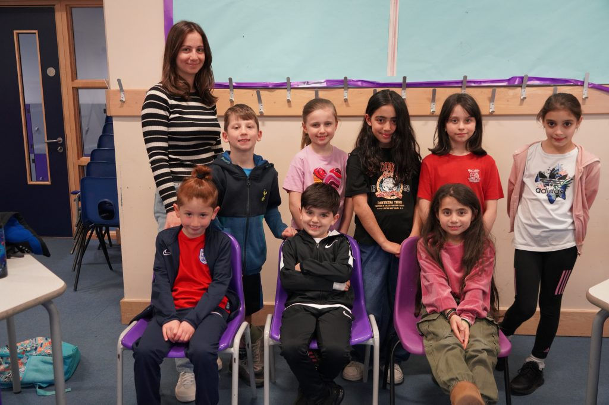

The Greek Academy meets every Tuesday evening during term time at Grange Park Primary School, Winchmore Hill — teaching Greek language and culture from nursery all the way through to GCSE.
The Greek Academy is dedicated to providing a nurturing and stimulating environment where students can thrive academically, culturally and socially. Our committed committee, made up of passionate educators and professionals, ensures the smooth running of the school and keeps standards high.
Our nursery lays a solid foundation for young learners through play-based learning, while our Greek and Cypriot cultural immersion programme runs through everything we do — dancing classes, cultural events and celebrations that build a real sense of identity and connection to Greek roots.
As children move towards their GCSE years, our pre-GCSE programme offers a rigorous curriculum with personalised instruction and support, preparing them fully for the exam ahead.

Run by a dedicated committee of parents and professionals, with every committee member holding an up-to-date DBS certificate.
Our highly qualified and dedicated teachers go above and beyond to inspire a love of learning and nurture every child's development.
Dancing classes, cultural events and celebrations sit alongside the language lessons, building a lasting connection to Greek and Cypriot heritage.
Every evening starts with the whole school together for assembly and prayers, led by our head teacher — and ends the same way, walking back to the hall together at pick-up.